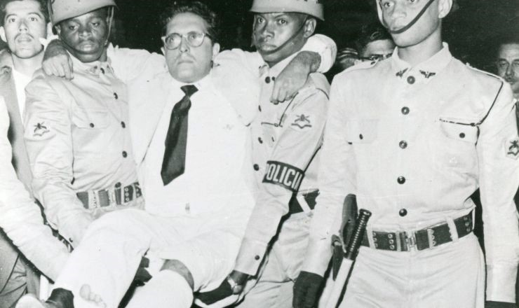
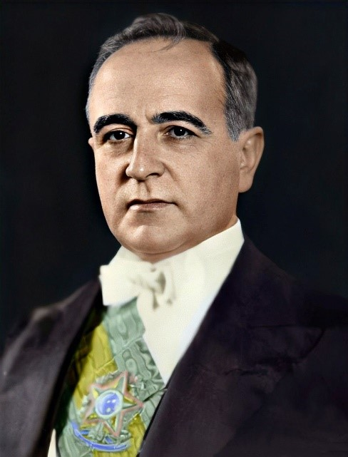
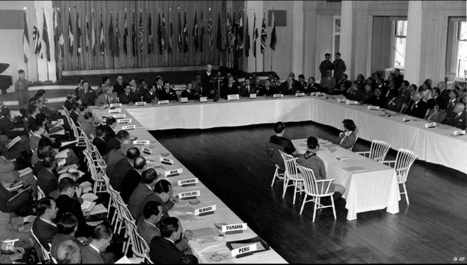

Política em 1954
O ano de 1954 foi marcado pelas tensões da Guerra Fria e por conflitos políticos em diferentes continentes. Em Cuba, Fulgencio Batista mantinha um governo autoritário apoiado pelos Estados Unidos. Na África, movimentos de independência cresciam contra o colonialismo europeu, enquanto o apartheid fortalecia a segregação racial na África do Sul. Nos EUA e na União Soviética, a disputa política e militar aumentava, influenciando conflitos na Ásia, no Oriente Médio e na América Latina.
Fim da Era Vargas
No Brasil, 1954 marcou o fim da Era Vargas. O governo enfrentava forte crise política, inflação e oposição crescente. Após o atentado da Rua Tonelero, ligado a pessoas próximas ao presidente, a pressão pela renúncia aumentou. Em 24 de agosto de 1954, Getúlio Vargas suicidou-se no Palácio do Catete, deixando a famosa frase: “Saio da vida para entrar na História.” Sua morte causou grande comoção popular e marcou profundamente a política brasileira.


Economia Pós-Guerra
Após a Segunda Guerra Mundial, muitos países começaram um processo de recuperação econômica. Os EUA se consolidaram como principal potência mundial, enquanto a Europa se reconstruía com ajuda do Plano Marshall. Ao mesmo tempo, várias regiões da América Latina, África e Ásia ainda enfrentavam pobreza, desigualdade e dependência econômica.
